|
Roda JC - De Graafschap (2-1) 28 augustus 2004 |
Roda JC
- De Graafschap (2-1) 28 augustus 2004
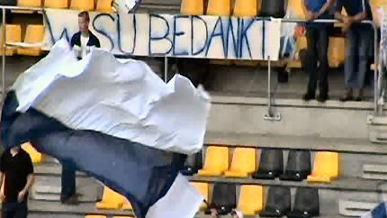
De supporters van De Graafschap kregen aanvankelijk geen
toestemming voor hun sfeeractie. Via Roda-supporters lukte dat
alsnog, vandaar dit bedanktje richting WSU.
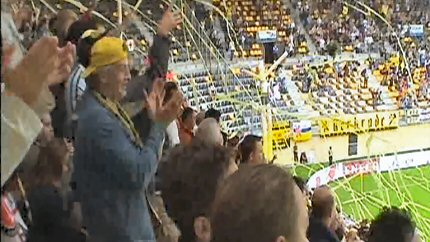
Sfeeractie van Roda Fanclub Voerendaal.
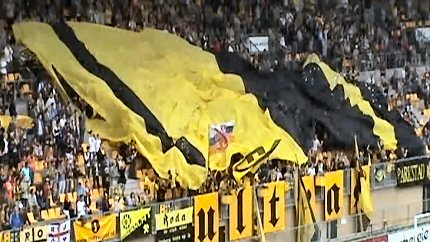
Het grote doek op de westzijde.
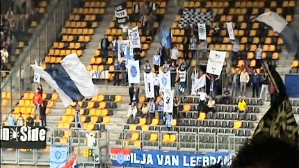
Veel vlaggen en banners in het gastenvak maar slechts veertig
fans.
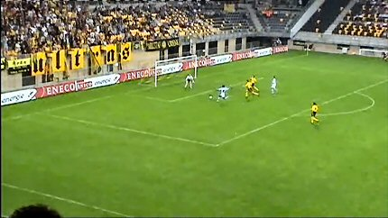
In de superslappe eerste helft is het Zongo van De Graafschap die
al counterend 0-1 scoort (24').
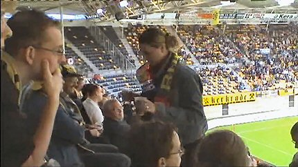
Cateringjuf op zuid.
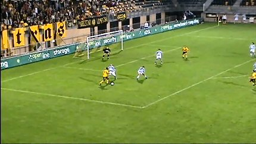
Er zitten nogal wat voyeurs van grote clubs op de tribune
waardoor
Kone ook niet meer weet waar hij in schoonheid moet sterven...

De Zebra's raken dodelijk vermoeid.
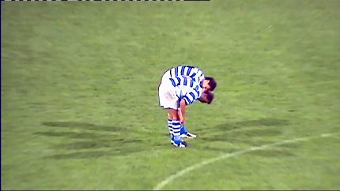
De batterijen zijn echt leeg.
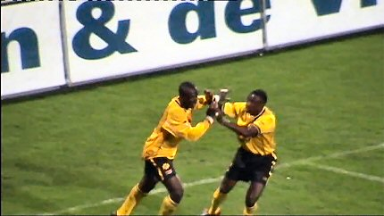
In de 69e min. scoort Kone de langverwachte gelijkmaker: 1-1.
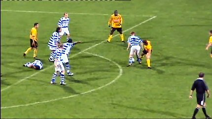
Een speler van De Graafschap ligt geblesseerd. Een collega wil
de
bal buiten de lijnen trappen.
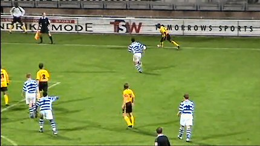
Sonko pikt de bal echter op. Hij is de vertragingstaktiek van
de
Superboeren kennelijk zat.
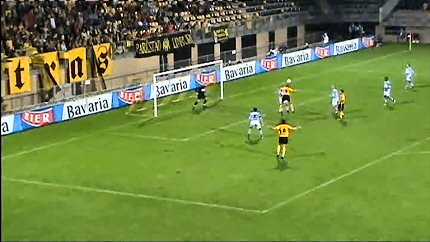
Hij plaatst vervolgens onberispelijk op Cristiano die 2-1
binnenkopt (78').
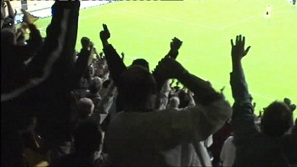
Toch nog feest in een halfvol stadion.
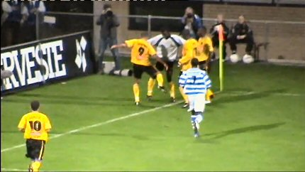
Vreugdedansje terwijl protesterende Graafschappers in aantocht
zijn.
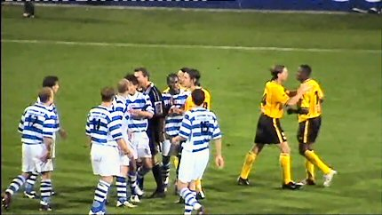
De gemoederen lopen aardig hoog op.
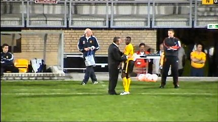
Zelfs Sonko moet door Vloet bedaard worden.
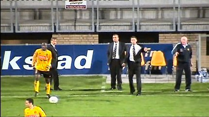
Veel opwinding langs de zijlijn.
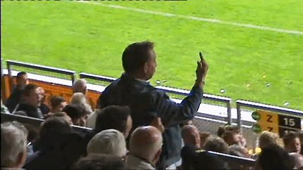
Ook opwinding op de tribune, hoewel het hier slechts een gast
betreft die een bal om zijn oren heeft gekregen.
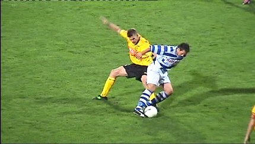
Good old Luijpers. Ongetwijfeld richting einde voetbalcarriere
maar
gelukkig niet einde Roda.
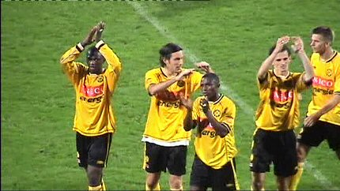
Bedankt voor de tweede helft, Danke - Bitte!
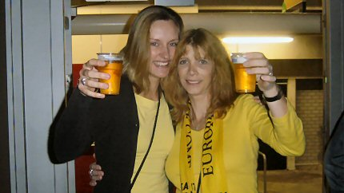
Rodameëdsjes in de kick Off.
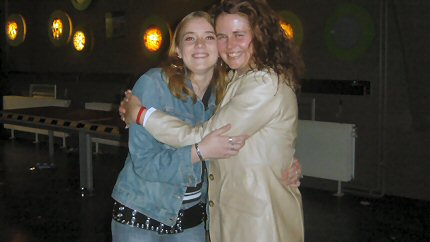
Links Lavienja, binnenkort Rodameëdsje op deze site (?)
Er kwamen vanavond geen spelers naar het
supportershome. Dat is
teleurstellend en enigszins onbeschoft! De broodjes zijn een euro
goedkoper geworden maar met 1,50 natuurlijk nog veel te duur....